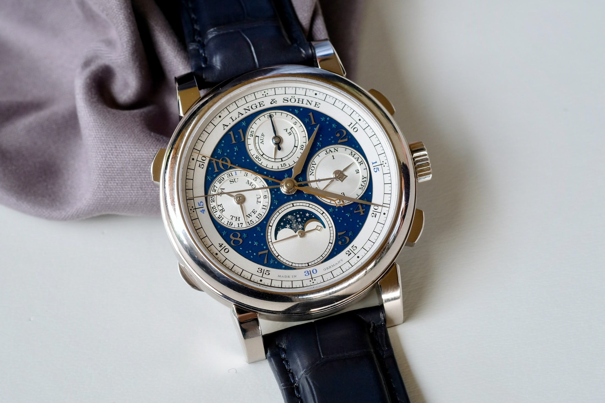
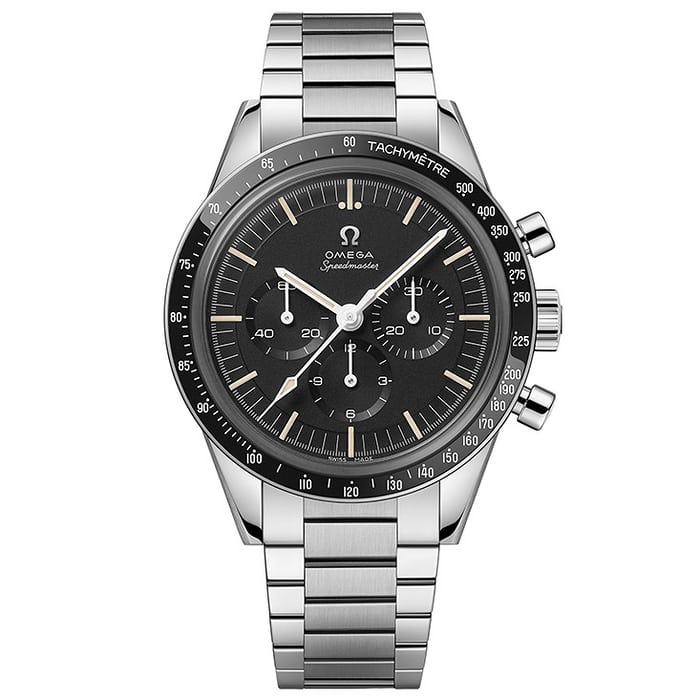
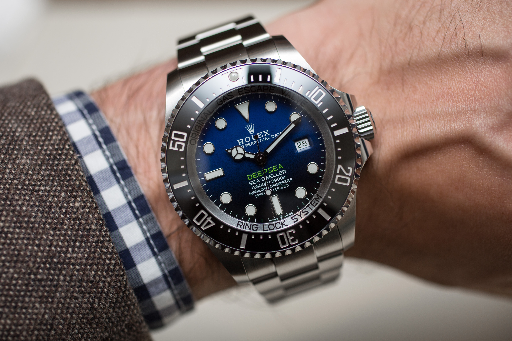

Watches can have many different special features, including calendars, chronographs and dive features.
  Calendar Some calendars just display the date of the month, and will need to be periodically adjusted at the end of the month, because the watch cannot tell how many days in the current month there are, and always goes up to 31 digits before resetting. There are also moonphase calendars, which displays the moons lunar cycle. Chronograph The chronograph can be used as a stopwatch, their primary function is the same for every watch that has a chronograph, but the way the chronograph is operated differes by the watch. Dive Dive watches are able to get wet and usually have an ATM rating, which describes how much watch pressure it can sustain.
Image credits Calendar: https://www.hodinkee.com/articles/perpetual-calendars-perfect-for-february-29 Chronograph: https://www.hodinkee.com/articles/our-favorite-chronographs-from-the-2020-new-releases Dive: https://www.hodinkee.com/articles/the-why-of-dive-watches